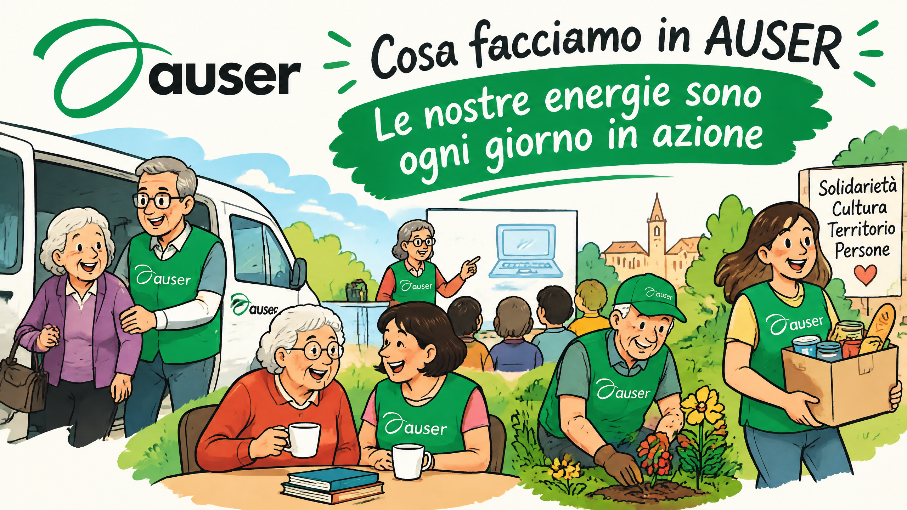

La nostra missione
L'impegno di Auser è fare in modo che ognuno possa dare e trovare aiuto, incontrare gli altri, arricchire le proprie competenze, contribuire alla crescita della comunità in cui vive.
La nostra visione
Promuoviamo una visione della cittadinanza in cui ogni persona, a qualunque età, possa continuare a sentirsi utile, partecipe e connessa alla società.
La nostra azione
Attraverso la presenza capillare delle nostre associazioni sul territorio nazionale, i nostri soci e i volontari sono impegnati quotidianamente nella costruzione di reti di relazioni, solidarietà e partecipazione attiva, capaci di contrastare l'isolamento e di generare benessere collettivo.
Le nostre attività
Aiuto alla persona
Sostegno alle fragilità, contrasto alla solitudine, attività a favore degli anziani, in particolare di quelli più soli e fragili.
Apprendimento Permanente
Attraverso le Università Popolari, i circoli e i centri culturali Auser, promuoviamo corsi, seminari, laboratori, momenti di approfondimento culturale e alfabetizzazione digitale.
Turismo Sociale e Attività per il tempo libero
Per una riappropriazione dei propri spazi di libertà, con il piacere di continuare a scoprire.
Volontariato per la comunità
Uno strumento concreto di cittadinanza attiva, che unisce generazioni diverse e valorizza le competenze di ciascuno.
Solidarietà internazionale
Un impegno senza confini per la pace e per la solidarietà in ogni parte del mondo.
Salute e benessere
Per mantenersi sani e in salute, promuovendo corretti stili di vita.
Sostegno alle persone migranti
Per promuovere una società più inclusiva e più solidale.
Abitare dalla parte degli anziani
Risposte concrete ai problemi legati alla dimensione domestica degli anziani.